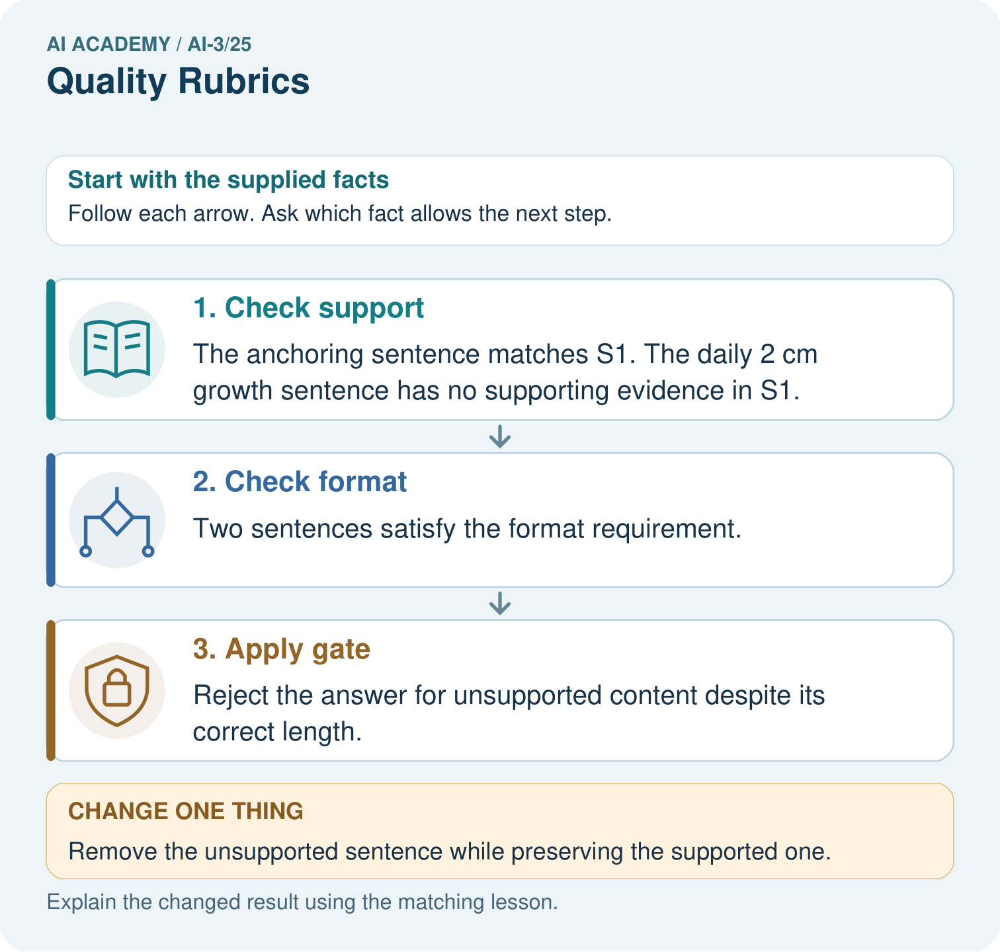

AI Academy · Level 3 · Grade 8 · Week 25 · Teacher guide
Quality Rubrics
Learn to understand, design, build, test and explain AI systems responsibly.
Project: Verified Study Buddy
Teacher guide · 1 of 8
Quality Rubrics
Teach the learning cycle
Primary target: Explain the mechanism and terminology of system evaluation sets
| Session | Sequence and minutes | Resources |
|---|---|---|
| Session 1 · Understand · 45 min | 0–7: recall and prerequisite; 7–15: inspect the concrete case and predict; 15–30: teacher models the worked trace; 30–40: learners explain a step using the text and visual; 40–45: check the core idea. | Sections 1–6; record the brief recall in the workbook. |
| Session 2 · Practise · 45 min | 0–5: retrieve the procedure; 5–15: W2 completion practice; 15–23: explain and check with a partner; 23–30: each learner answers the misconception check; 30–40: targeted reteaching or a harder variation; 40–45: prepare the investigation. | Sections 7–10; use the matching workbook W2 and misconception check. |
| Session 3 · Investigate and transfer · 45 min | 0–5: retrieve the decision rule; 5–20: investigate or trace; 20–30: start the independent case; 30–38: connect the project; 38–43: act on feedback; 43–45: plan the return check. | Sections 9 and 11–14. Give extra time to finish the full task set; use Section 15 when the week includes a coding lab. |
This is a starting allocation of 135 minutes, not a validated duration. Preserve all named topics. Schedule extra time for connected examples, the full investigation, independent cases and project building. Repeated copies of a case share one recorded attempt; they are not new evidence.
Case exposure check: this source example appears in ai-3/25, ai-3/26. Reuse a familiar case for recall or modelling; verify that the case used to assess transfer has not already received feedback.
Retrieval answer guidance
Prototype a Grounded Assistant
Without opening the old lesson, explain one key idea from Prototype a Grounded Assistant. Give an example and a mistake that the idea helps you avoid.
Look for: Explain the mechanism and terminology of capstone grounded assistant
Reference example, not the only acceptable wording: Teacher explanation: Build the assistant as a sequence of testable stages: validate request, retrieve authorised evidence, decide answerability, draft, validate and return. Avoid merging all errors into one model score. A supported response requires current matching approval and register records. Any retrieval or validation failure gives needs_review with null claims. The classroom implementation performs no booking or external action.
Requests Responses and JSON
Without opening the old lesson, explain one key idea from Requests Responses and JSON. Give an example and a mistake that the idea helps you avoid.
Look for: Parse JSON into Python records
Reference example, not the only acceptable wording: None and true, respectively.
User Need and AI Contribution
Without opening the old lesson, explain one key idea from User Need and AI Contribution. Give an example and a mistake that the idea helps you avoid.
Look for: Explain the mechanism and terminology of capstone requirements and corpus
Reference example, not the only acceptable wording: Teacher explanation: A grounded-assistant capstone begins with bounded requirements and a versioned permitted corpus. A baseline can be a manual lookup process using the same evidence. Specify the user question, source authority, access, output/fallback contract and evaluation plan. Freeze corpus IDs and split cases before implementation. Keep teacher material out of student retrieval.
Use the student module and workbook section with this exact week title. The worked case, independent question and answers below form one aligned lesson sequence.
What the learner must demonstrate
An answer earns 2 for format, 2 for tone and 0 for source support. It gets 4/6. Is it acceptable for a source-only assistant? Revise the rubric's decision rule.
Concept to explain
Usefulness, correctness, clarity, safety, and completeness must be judged separately.
| Term | Meaning |
|---|---|
| dimension | One component or axis of a representation, such as one feature in a vector. |
| anchor | A reference example used to make a judgment or scoring standard concrete. |
| inter-rater agreement | The extent to which different labelers give matching judgments on the same cases. |
| tradeoff | A situation where improving one desired property can make another harder to achieve. |
Prepare the class
Use the supplied scenario, student illustrations and blank paper. For numeric work, offer counters or a calculator after learners show the setup. Fictional records are supplied; personal data and paid accounts are unnecessary.
Allow 80 minutes: recall 8; explanation 12; worked demonstration 15; guided practice 20; independent assessment 15; project and reflection 10. Extend the lab into a second session when needed.
Preparation for the connected explanation
Two 45-minute sessions. A system evaluation set contains cases with expected behaviour and scoring rules. It should cover retrieval, support, fallback and permissions rather than only easy answerable questions. Use the supplied constructed scenarios to make the mechanism inspectable. Collect W4 before sharing solutions. Students should name intermediate evidence and limitations; classroom pacing and learning effectiveness remain unvalidated.
Readiness answer
A result depends on the inputs, procedure and conditions that produced it. Preserve data roles and distinguish observed outcomes from predictions or unmeasured conditions. If the prior concept cannot be explained, use a short retrieval activity before this chapter.
Lesson and workbook; paper and pencil
Calculator and optional local Python 3 for arithmetic; no live API or private data
Prepare the fresh retry separately and withhold its solution until after collection
End goal for the pictorial case
By the end, I can explain quality rubrics using a traced example and a stated limitation.
This added worked case illustrates the week’s main idea. Retain all original and connected topics; schedule its practice within the teaching cycle.
Teacher guide · 2 of 8
Explain the mechanism
Explain the mechanism
Input → Process → Output
Trace the information. At each stage, ask what changed and how you could test it.
Which stage could fail even when the other two are correct? Explain:
Predict first. Then check each step. A correct answer without visible reasoning is incomplete evidence.
1. Output is clear and useful but contains one unsupported claim.
2. Clarity=4 does not cancel correctness=1.
3. Score each dimension using observable anchors.
4. Discuss scorer disagreements and refine ambiguous anchors.
Recalculate, retrace, or restate the reasoning in your own representation:
CHECK Did the evidence answer the exact question? Did the total, path, or source record stay consistent?
Concrete teaching case
Rubric gives 0–2 each for support, usefulness and safety. Response is useful and safe but unsupported.
Why can a total mislead?
Exact explanation to model
It may get 4/6 while failing essential support. Declare mandatory criteria before testing so other points cannot compensate.
Explain the added worked example
A system evaluation set contains cases with expected behaviour and scoring rules. It should cover retrieval, support, fallback and permissions rather than only easy answerable questions.
Begin by writing the question the procedure is intended to answer. Identify the information already supplied, the information it will produce and the information still missing. These are constructed classroom examples; they do not require live accounts, private records or an external service. Do not treat a plausible explanation as a measured outcome.
Record case ID, evidence version, expected claims or fallback, permitted actions and scoring rubric. Separate development from final cases. Aggregate metrics only after checking required conditions individually.
Before applying the procedure, write its units, denominator or decision boundary where relevant. A partner should be able to repeat each step using the same inputs. If a required input is absent or violates the stated contract, record that condition explicitly instead of quietly replacing it with a convenient value.
Key terms
| Term | Meaning |
|---|---|
| Evaluation case | An input with evidence and prespecified expected behaviour |
| Coverage | Which relevant conditions are represented |
| Contract pass | Satisfying the declared requirements for one case |
Model the reasoning aloud
Use the complete worked example below before asking learners to complete W2. Reveal a small part, invite a prediction, then explain the deciding step. These teacher notes contain solutions; do not reveal the independent case answer during modelling.
Ten cases include six answerable and four missing-evidence cases. System answers five answerable correctly and abstains appropriately on three missing cases.
Answer correctness 5/6; appropriate fallback 3/4; combined contract passes 8/10 if each case has one required outcome. Different denominators answer different questions.
Compare the intermediate evidence with the final statement. Explain why each number or decision follows from the stated inputs. The conclusion belongs to this scenario and procedure; changing the inputs, evaluation population or authority can change what it establishes. Retain the raw record so a later revision can be compared honestly.
| Thinking move | Teacher prompt |
|---|---|
| Plan | What is given? What is the question? Which procedure fits these facts? |
| Do | Point to each input and intermediate step in the worked trace. Name the rule that allows the next step. |
| Check | Does the output answer the question? Which assumption or limitation prevents a larger claim? |
Use the diagram and verbal explanation together. Ask learners to match a sentence to a specific visual step; do not assign learners fixed visual or auditory learning styles.
A pictorial worked case: Quality Rubrics
Use a quality rubric whose safety gate cannot be traded for attractive formatting.
The facts we will use
Approved S1 says: “A root anchors a plant in soil.” Rubric: every claim supported by S1, at most two sentences. Draft: “A root anchors a plant in soil. Roots grow exactly 2 cm each day.”
All inputs and outcomes in this worked example are invented classroom data; no real model run is claimed.

Read the picture one step at a time
Why this result follows
Compare each draft sentence directly with S1. The anchoring claim matches the supplied source; the daily growth claim adds a measurement the source never gives. Two sentences pass the format rule, but unsupported content fails the mandatory evidence gate. Removing that sentence repairs the support defect rather than merely polishing the wording.
What this example does not establish
Passing this small rubric does not establish readability, completeness or benefit across every pupil and question.
Change one thing in the pictured case
Change: Remove the unsupported sentence while preserving the supported one.
Prediction: The revised one-sentence answer passes these two declared checks.
Reason: The remaining claim is supported and one sentence is within the maximum.
Ask while showing the picture
Cover the result. Ask learners to name the inputs and predict the next step. Uncover one step, connect the icon to the actual procedure, and explain its evidence. Then change the supplied condition and compare. The picture is a representation; it does not document execution of a real AI model.
Teacher guide · 3 of 8
Demonstrate and guide practice
Demonstrate and guide practice
Board sequence
Write the given facts: Rubric gives 0–2 each for support, usefulness and safety. Response is useful and safe but unsupported.
Write the question to explain: Why can a total mislead?
Reveal after predictions: It may get 4/6 while failing essential support. Declare mandatory criteria before testing so other points cannot compensate.
Keep for an independent attempt: Two answers have equally polished language. One has three supported claims; the other has two supported claims and one invented claim. How should a quality rubric distinguish them?
Classroom dialogue
Ask: Which facts are given, and which would we have to assume? Learners mark relevant details before discussing answers.
Say: Predict first. Show the rule, information path or calculation that would produce the result. A correct guess is not yet an explanation.
Reveal reasoning one step at a time. Explain why a tempting alternative fails. Write units and denominators for arithmetic, trace conditions for decisions, and identify supporting sources for claims.
In pairs, one learner solves while the other checks evidence; exchange roles. Remove the worked answer before independent assessment.
Model these guided questions
Guided: Answer correctness 5/6; appropriate fallback 3/4; combined contract passes 8/10 if each case has one required outcome. Different denominators answer different questions. Qualification: Evaluation coverage limits the claim; prompts tuned on these cases need new reserved final cases. Exit: accept a concrete variation with its predicted outcome and a stated condition that would challenge the mechanism; reject a claim resting on unmeasured evidence.
Case-specific teaching sequence
| Stage | Teacher action |
|---|---|
| Session 1: 0–7 minutes | Retrieve the prerequisite; identify the input, procedure and evidence source. |
| 7–18 minutes | Explain section 1 and vocabulary. Complete W1 with a mechanism-based explanation. |
| 18–32 minutes | Trace the declared procedure and worked case. Complete W2, recording intermediate steps. |
| 32–45 minutes | Discuss the diagram with the worked input; use W3 to distinguish measured claims and limitations. |
| Session 2: 0–8 minutes | Retrieve the worked reasoning and collect the guided response before discussing it. |
| 8–20 minutes | Compare a proposed boundary variant with the original case; identify what remains fixed. |
| 20–35 minutes | Collect W4 independently. Require the procedure trace and the bounded conclusion. |
| 35–45 minutes | Use W5 and exit responses for feedback. Administer the fresh retry after feedback and preserve both attempts. |
Reduce help deliberately
Completion task: Ten cases include six answerable and four missing-evidence cases. System answers five answerable correctly and abstains appropriately on three missing cases. Show the intermediate steps and give the conclusion with its scope.
Teacher check: Teacher explanation: Answer correctness 5/6; appropriate fallback 3/4; combined contract passes 8/10 if each case has one required outcome. Different denominators answer different questions.
Start by identifying the given inputs together. Leave the intermediate steps blank. If needed, model one step, then withdraw that help on the next step. Move to a full trace only when the partial trace is understood. For partners, alternate explainer and checker; collect a response from every learner before discussion.
Individual reasoning check
Use the worked case for System evaluation sets. Proposed explanation: “The worked result establishes every future case”. Decide whether this explanation is supported. Point to the step or supplied fact that decides; explain your repair if needed.
Expected correction: Evaluation coverage limits the claim; prompts tuned on these cases need new reserved final cases.
Collect explanations, not only yes/no votes. If a misunderstanding is common, re-model the relevant step for the class. If it affects a few learners, give a short targeted group explanation while others solve a more demanding variation.
Pictorial practice question
Why is “one out of two checks passed” an insufficient release decision? Point to the relevant step in the picture, then write the changed result and the rule or evidence that supports it.
Reasoned teacher answer
Support is a mandatory gate. Passing length cannot compensate for presenting an unsupported claim as fact. Changed-case check: The revised one-sentence answer passes these two declared checks. The remaining claim is supported and one sentence is within the maximum.
Changed-case reasoning: The revised one-sentence answer passes these two declared checks. The remaining claim is supported and one sentence is within the maximum.
Collect each learner’s explanation before discussion. Use the first missing connection between input, deciding step and result to choose support. This question is worked-case practice, not fresh mastery evidence.
Teacher guide · 4 of 8
Run the weekly evidence lab
Run the weekly evidence lab
Words You Can Use to Reason
A definition matters when you can recognize the idea, use it, and contrast it with a near-miss.
Predict → Test → Record → Explain
Keep expected and actual results separate. Surprises are useful data when recorded honestly.
Score three outputs independently, compare by dimension, cite evidence for each score, and improve one weak anchor.
What did the hardest test teach you that the normal test did not?
Make the lab runnable
Use the concrete case as the shared normal case and the independent question as a second case. Each pair creates a boundary or missing-information case and predicts its result before testing. Keep the expected result separate from an observed mistake.
| Record | What to capture |
|---|---|
| Input or evidence | Exact data, instruction or claim |
| Expected result | Answer or safe fallback declared before the run |
| Observed result | Actual result, including errors |
| Explanation | Rule, calculation or evidence explaining the outcome |
| Next test | One justified change and a new prediction |
Diagnose and reteach
For guessing, return to given facts and request a trace. For vocabulary without application, use one example and one non-example. For arithmetic errors, check the setup before the calculation. Finish with a different uncoached case before recording mastery.
Address these additional misconceptions
The worked result establishes every future case: Evaluation coverage limits the claim; prompts tuned on these cases need new reserved final cases.
A missing input may be replaced without recording the change: A replacement changes the evidence or contract. Record the change and its justification; do not silently turn unknown into a measured value.
Repeating an assessed case is new independent evidence: A replay checks consistency. An example used for feedback or revision cannot later be described as untouched final evaluation.
Match the support to the first error
| What the response shows | Next teaching action |
|---|---|
| Missing or misread facts | Read the case aloud, mark supplied versus unknown facts, and let the learner restate it. |
| Wrong procedure | Return to the deciding step in the worked case. Contrast it with the proposed incorrect explanation. |
| Arithmetic or implementation error | Trace intermediate values or lines; preserve the first mismatch and retry that step. |
| Correct result without a reason | Ask for a trace and a changed case before marking independent understanding. |
| An unsupported wider claim | Ask which supplied evidence supports the claim and which further observation would be needed. |
Offer an oral explanation, drawing, enlarged visual or fewer examples when that removes a reading/writing barrier. Keep the same reasoning goal. Stretch secure learners by changing a boundary or assumption and asking them to defend the effect, not simply by assigning more of the same questions.
Teacher guide · 5 of 8
Assess and explain the answers
Assess and explain the answers
Worked case answer
It may get 4/6 while failing essential support. Declare mandatory criteria before testing so other points cannot compensate.
Independent question
Two answers have equally polished language. One has three supported claims; the other has two supported claims and one invented claim. How should a quality rubric distinguish them?
Expected independent answer
Score factual support separately from style and flag the invented claim. A serious unsupported claim can fail a required evidence criterion.
What counts as evidence
| Criterion | 0 points | 1 point | 2 points |
|---|---|---|---|
| Result | Incorrect or absent | Partly correct | Correct with necessary conditions |
| Reasoning | No supporting trace | Some steps | Clear mechanism, calculation or source support |
| Limit | Overclaims certainty | Vague limitation | Relevant uncertainty or missing fact |
| Transfer | Copies without adapting | Adapts with prompts | Solves a changed case independently |
Use 6/8 as a classroom checkpoint, with 2 required for both Result and Reasoning. This is a proposed teaching rule, not a validated certification threshold. Do not count a coached answer as independent mastery; correct unsafe or unsupported claims regardless of total.
Feedback
Ask the learner to find the evidence that challenges this claim: “A single overall impression is enough to evaluate answer quality.” Keep the first attempt and an uncoached retry separate.
Original transfer answer
No. Require source support as a mandatory pass condition in addition to any overall threshold. Keep tone and format as separate dimensions. State the rule before testing to avoid approving unsupported answers because they look polished.
Explanations for the additional workbook examples
W1 Explain the mechanism
Explain the weekly mechanism in your own words. Use the worked scenario to name its input, decision rule and output.
Teacher explanation: A system evaluation set contains cases with expected behaviour and scoring rules. It should cover retrieval, support, fallback and permissions rather than only easy answerable questions. Record case ID, evidence version, expected claims or fallback, permitted actions and scoring rubric. Separate development from final cases. Aggregate metrics only after checking required conditions individually.
W2 Trace the worked case
Ten cases include six answerable and four missing-evidence cases. System answers five answerable correctly and abstains appropriately on three missing cases. Show the intermediate steps and give the conclusion with its scope.
Teacher explanation: Answer correctness 5/6; appropriate fallback 3/4; combined contract passes 8/10 if each case has one required outcome. Different denominators answer different questions.
W3 Audit the limit
A report omits this qualification: Evaluation coverage limits the claim; prompts tuned on these cases need new reserved final cases. Explain how omitting it could change a reader's interpretation, and write an accurate replacement.
Teacher explanation: Evaluation coverage limits the claim; prompts tuned on these cases need new reserved final cases. State the observed result separately from the unverified or out-of-scope claim; preserve the original evidence rather than inventing a missing fact.
W4 Apply a new case independently
Twelve cases: eight answerable, four unanswerable. Correct answers six; appropriate abstentions two. Compute separate and combined pass rates.
Teacher explanation: 6/8=75%; 2/4=50%; combined 8/12=2/3. Do not call all twelve answer-accuracy cases.
W5 Design a revealing follow-up
For the worked scenario, propose one additional case that could reveal a failure, describe its expected outcome before running it, and explain what would need to remain fixed for a fair comparison. Do not reuse W4 as a new final test after receiving feedback.
Teacher explanation: Accept a concrete variant of the worked input or a missing/conflicting/boundary condition, with an expectation derived from the declared procedure. Require preserved settings, original outputs and data roles. Evaluation coverage limits the claim; prompts tuned on these cases need new reserved final cases. The new case should test this particular mechanism rather than merely restate the original result.
Assess independent transfer
Selected case: Twelve cases: eight answerable, four unanswerable. Correct answers six; appropriate abstentions two. Compute separate and combined pass rates.
Selected case answer
Teacher explanation: 6/8=75%; 2/4=50%; combined 8/12=2/3. Do not call all twelve answer-accuracy cases.
| Dimension | Evidence required |
|---|---|
| Explanation | Names the applicable idea or procedure and ties it to the supplied facts. |
| Trace and result | Preserves the given inputs and shows the relevant intermediate steps; distinguishes a prediction from an observed execution. |
| Limits | States the assumptions, missing evidence or conditions under which the result would change. |
Record each dimension as not yet, with support, or independent. Accept a valid alternative procedure with a defensible trace. Do not penalise an honestly recorded model failure if the learner correctly explains its evidence and limits.
Feedback that the learner uses
Name the earliest unsupported step and give one action to repair it. Have the learner make that repair now and explain why. Then assess the relevant skill on a fresh, fully specified case. Confirm it was not previously practised with feedback; solve and check the new case before assigning it. A follow-up design prompt is a starting brief, not automatically an equivalent test.
Teacher guide · 6 of 8
Connect and extend learning
Connect and extend learning
Verified Study Buddy
Use a five-dimension rubric and block release when correctness or safety is below threshold.
Keep the decision, input, result, explanation and remaining limitation in the project evidence record. Retrieve this record next week rather than restarting the project.
Support and stretch
Provide one short approved passage; separate instruction, input, output and evidence. Stretch: introduce an unsupported claim or conflicting source and validate claim by claim with a fallback.
Exit reflection
Ask for one decision the learner can now justify and one situation requiring more evidence or human review. Confidence ratings are separate from correct independent performance.
Bridge to the next week
Next: Week 26: Evaluation Sets. Retrieve today’s evidence and identify what carries forward and what is new.
Support and fresh reassessment
Provide an input/procedure/result/limit frame and a calculator when needed. Ask students to identify the first step before completing the whole trace. Extension: compare two concrete variants of this mechanism while holding unrelated conditions fixed; report both successful and unsuccessful outcomes.
W4: 6/8=75%; 2/4=50%; combined 8/12=2/3. Do not call all twelve answer-accuracy cases. Require intermediate reasoning and the stated scope. Fresh retry: Five answerable and five unanswerable; four correct answers and four appropriate fallbacks. Expected reasoning: 4/5=80% in each category; combined 8/10. Preserve individual failures and permission checks. If students need support, record it and reassess with another new case rather than awarding independence to a copied answer.
Next connection: Capstone requirements and corpus. Preserve the current case record and retrieve its evidence boundary before moving on.
Plan the delayed return
Suggested return points in this level: ai-3/26, ai-3/28, ai-3/31. Use actual classroom dates, adjusting for holidays and gaps. One, three and six teaching weeks are scheduling choices, not a claimed optimal spacing.
At a delayed check, ask for the idea from memory and a changed application. Compare with the earlier independent response and record support used. For a new level, revisit the previous capstone before checking the new prerequisites.
| Record | Teacher evidence |
|---|---|
| Learner code and date | |
| Concept and case used; prior exposure | |
| Explanation / trace / limits | |
| Support and first repair | |
| Changed case and delayed outcome | |
| Next teaching action |
Use the evidence to choose reteaching or the next step. A completed page, confidence rating or attractive project does not by itself demonstrate understanding.
Project evidence from this case
For your Verified Study Buddy, save the input, procedure, observed result and limitation of this check. Label this worked example as practice; use a different, previously unreviewed case when checking independent understanding.
Teacher guide · 7 of 8
Prepare, teach and assess
Teaching target: Explain the mechanism and terminology of system evaluation sets
Prepare the labelled worked-case picture, the matching workbook, fictional input cards and a place for individual responses. No paid AI account is required for the paper reasoning activities.
| Session | Plan | Resources |
|---|---|---|
| Session 1 · Understand · 45 min | 0–7: recall and prerequisite; 7–15: inspect the concrete case and predict; 15–30: teacher models the worked trace; 30–40: learners explain a step using the text and visual; 40–45: check the core idea. | Sections 1–6; record the brief recall in the workbook. |
| Session 2 · Practise · 45 min | 0–5: retrieve the procedure; 5–15: W2 completion practice; 15–23: explain and check with a partner; 23–30: each learner answers the misconception check; 30–40: targeted reteaching or a harder variation; 40–45: prepare the investigation. | Sections 7–10; use the matching workbook W2 and misconception check. |
| Session 3 · Investigate and transfer · 45 min | 0–5: retrieve the decision rule; 5–20: investigate or trace; 20–30: start the independent case; 30–38: connect the project; 38–43: act on feedback; 43–45: plan the return check. | Sections 9 and 11–14. Give extra time to finish the full task set; use Section 15 when the week includes a coding lab. |
Before class, solve the supported practice: Ten cases include six answerable and four missing-evidence cases. System answers five answerable correctly and abstains appropriately on three missing cases. Show the intermediate steps and give the conclusion with its scope.
Reasoned practice answer: Teacher explanation: Answer correctness 5/6; appropriate fallback 3/4; combined contract passes 8/10 if each case has one required outcome. Different denominators answer different questions.
Check every learner before discussion: Use the worked case for System evaluation sets. Proposed explanation: “The worked result establishes every future case”. Decide whether this explanation is supported. Point to the step or supplied fact that decides; explain your repair if needed.
Misconception repair: Evaluation coverage limits the claim; prompts tuned on these cases need new reserved final cases.
Support: read the exact case aloud, enlarge the labelled picture, supply input cards and model only the first deciding step. Accept a spoken explanation or drawing; retain the reasoning goal.
Extension: Remove the unsupported sentence while preserving the supported one. Require a prediction and a reason before comparing. Expected result: The revised one-sentence answer passes these two declared checks. Reason: The remaining claim is supported and one sentence is within the maximum.
Independent assessment: withhold the reserved answer until the learner has attempted the new case. Record support separately from correctness.
| Criterion | Not yet | With support | Independent |
|---|---|---|---|
| Explanation | Names an answer without a deciding fact | Uses a hint to link fact and decision | Explains the deciding fact in own words |
| Trace or test | Cannot connect input and result | Completes steps with prompts | Traces or tests a changed case accurately |
| Limits and revision | Claims more than evidence supports | Names a limit after a prompt | States a defensible limit and useful next test |
Project checkpoint: Prepare the demonstration. Gather reproducible instructions, evidence, access checks and remaining limitations.
Use the weekly teacher answer for topic-specific reasoning. A saved progress tick is an activity record; judge mastery from the learner’s explanation and evidence.
Teacher guide · 8 of 8
Use feedback, labs and repair paths
Use the two formative questions as supported practice, not as independent mastery scores. Discuss the deciding evidence rather than accepting a guessed selection.
The feedback comes from the reviewed public worked case. Do not reveal the separately reserved independent teacher answer until the learner has attempted that case.
Ask students to predict before running code. Preserve errors and actual outputs; collect a changed test and an explanation. The branch-boundary and indexing lessons deliberately include failure cases.
Use the earlier worked-explanation links to address a specific missing building block, then return to the current question. Adapt this suggestion after observing the learner; it is not an automatic diagnosis.
Collect the completed-work portfolio as evidence. Record support separately from correctness, and assess explanation, trace/test and limitations. Progress ticks and quiz selections alone do not establish mastery.